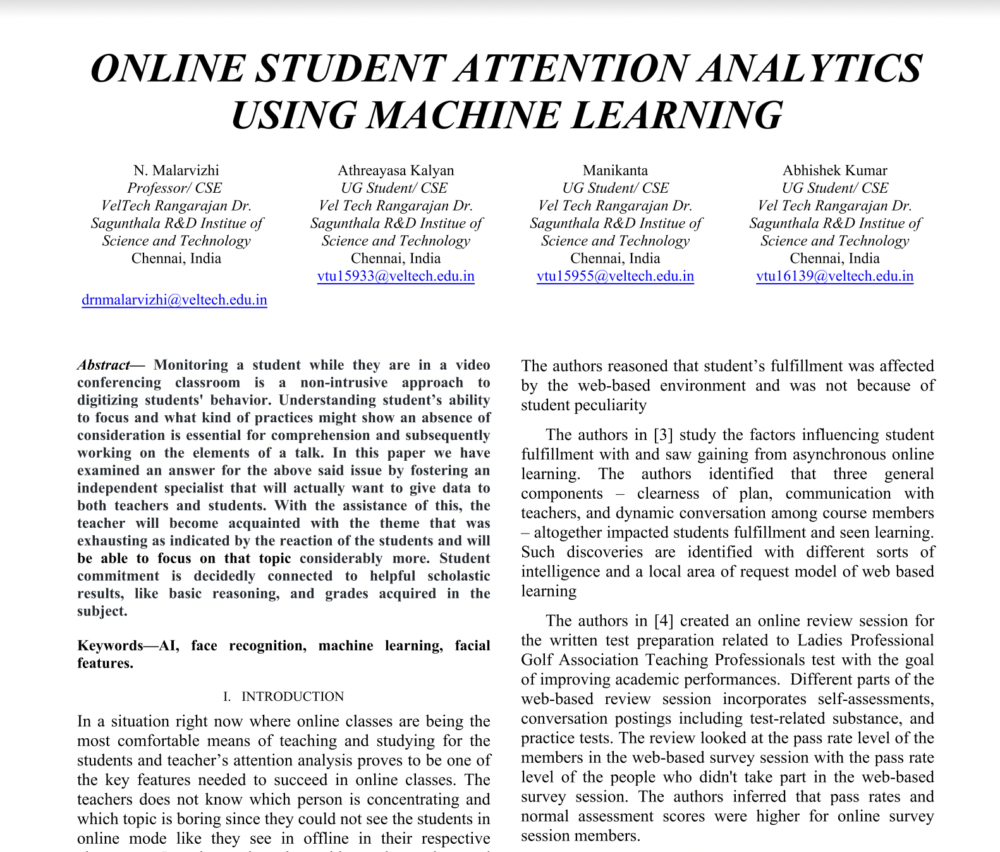
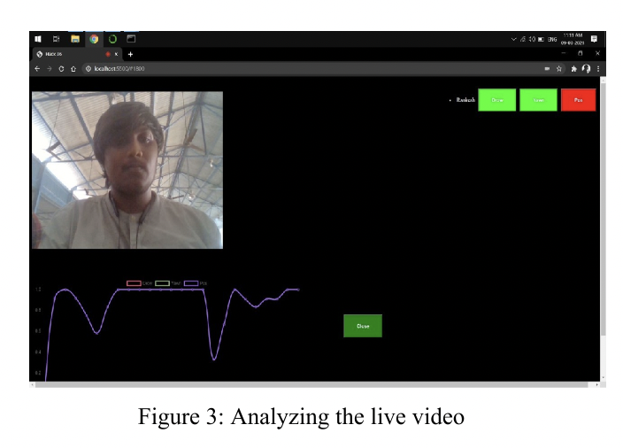

ONLINE STUDENT ATTENTION ANALYTICS USING MACHINE LEARNING
This was a project I started with the help of my mentor Dr. N Malarvizhi and two of friends Manikanta and Athreayasa.
Monitoring a student while they are in a video conferencing classroom is a non-intrusive approach to digitizing students behavior.
With the assistance of this, the
teacher will become acquainted with the theme that was
exhausting as indicated by the reaction of the students and will
be able to focus on that topic considerably more.
The face recognition module uses real time data from the camera that is being turned on by the students.
The authors reasoned that student’s fulfillment was affectedby the web-based environment and was not because of student peculiarity.
Technologies:
- - Python
- - AI
- - Machine Learning
- - Facial Features
- - Multiple regression
- - HOG algorithm
- - Google Maps API
- - XML2PDF - PDF generator
Analyzing the live video
